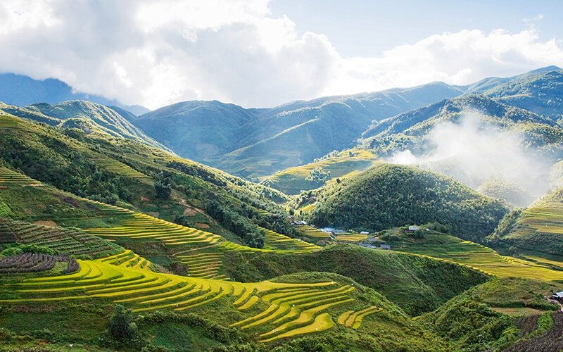
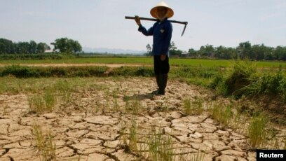
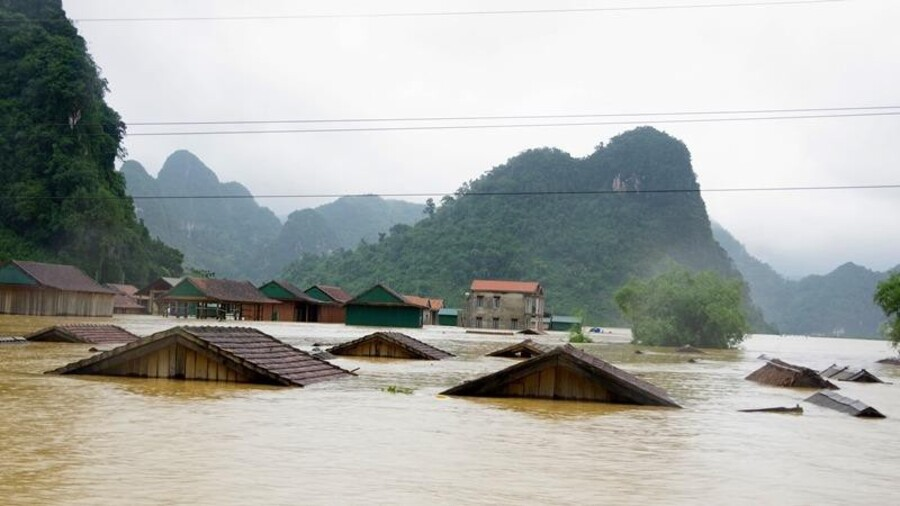

Nothern Vietnam
Northern Vietnam climate is quite similar to the US with four seasons: Spring, Summer, Autumn, and Winter. It is also humid and subtropical with rainy and dry seasons in some areas.
Northeast
- Affected by the humid monsoon climate, cold and dry winter
- North wind usually blows in winter
- Tropical storms and hot in the summer
- Rainy and humid
Northwest
 - Warmer winter, but very wet
- Heavy rainfall causes floods
- Drought in the dry season
- Sometimes the drought lasts beyond the tolerance of the trees
- Climate events in mountainous areas are extreme in nature, especially in the case of reduced forest cover and degraded soil cover
Two periods of interference between the rainy season and the dry season, thereby forming spring and autumn.